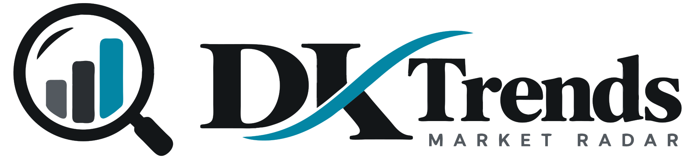

콘텐츠로 바로가기
DK Trends
최신 Radar를 불러오는 중입니다.

—
—
Now
Today
This Week
This Month
Now
LIVE
마지막 Radar ·
—
· 현재 필요한 정보만 빠르게 보여줍니다.
새로고침
관심 테마
0
관심 종목
0
↗
Yesterday
전날 관심 종목 중 설명이 필요한 종목을 복기합니다.
›
◎
Historical Events
과거 사건과 결과를 복기해 현재 판단의 참고자료를 제공합니다.
›
Today
ARCHIVE
Radar Snapshot을 불러옵니다.
0 RADARS
데이터를 불러오는 중입니다.
×
OBSERVE
관심 테마
수집한 뉴스 · 근거
관련 종목과 근거